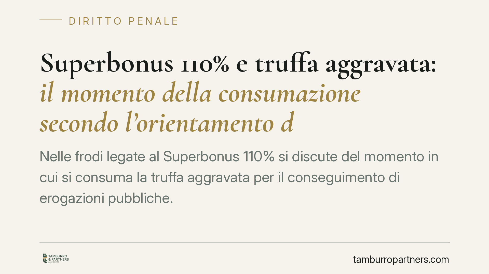

Superbonus 110% e truffa aggravata: il momento della consumazione secondo l'orientamento delle Sezioni Unite
Nelle frodi legate al Superbonus 110% si discute del momento in cui si consuma la truffa aggravata per il conseguimento di erogazioni pubbliche. L'orientamento in formazione collega la consumazione già alla prima cessione del credito fittizio, prima di ogni riscossione o compensazione. La questione pesa su confisca, prescrizione e strategie difensive di imprese, tecnici e cessionari.

Il nodo giuridico
Le frodi collegate al Superbonus 110% ruotano attorno alla creazione di crediti d'imposta non sostenuti da lavori reali o da costi effettivi. Il punto discusso è quando, esattamente, il reato di truffa si considera commesso: al momento della cessione del credito oppure solo quando quel credito viene monetizzato tramite compensazione o riscossione.
Sul tema è attesa, ed è in corso di consolidamento, una pronuncia delle Sezioni Unite penali della Corte di Cassazione. In attesa del deposito con numero e data certi, trattiamo l'indirizzo come orientamento in formazione: l'argomento merita attenzione proprio perché incide su profili pratici di rilievo immediato.
> Avvertenza di lettura: finché la sentenza non è depositata con estremi verificabili (numero e data), quanto segue va considerato ricostruzione di un orientamento atteso, non principio di diritto già cristallizzato.
Inquadramento normativo
La cornice è data dagli artt. 640 e 640-bis del codice penale. L'art. 640 c.p. punisce la truffa comune: chi, con artifizi o raggiri, induce taluno in errore procurandosi un ingiusto profitto con altrui danno. L'art. 640-bis c.p. configura la truffa aggravata quando il profitto riguarda erogazioni pubbliche: contributi, finanziamenti, mutui agevolati o altre erogazioni concesse da enti pubblici.
La distinzione non è formale. La truffa aggravata ex art. 640-bis prevede pene più severe e un diverso regime di procedibilità e competenza rispetto alla fattispecie base.
Sul versante patrimoniale rileva l'art. 640-quater c.p., che estende alla truffa aggravata l'applicabilità dell'art. 322-ter c.p.: è quest'ultima la norma sostanziale che disciplina la confisca per equivalente, cioè l'ablazione di beni di valore corrispondente al profitto quando il profitto stesso non sia direttamente aggredibile.
Va infine considerata la possibile concorrenza con l'art. 8 del D.lgs. 74/2000, che punisce l'emissione di fatture per operazioni inesistenti: nelle frodi da Superbonus la fatturazione fittizia è spesso lo strumento che genera il falso credito.
Perché il momento della consumazione cambia tutto
Se la truffa si consuma già con la prima cessione del credito fittizio, e non con la successiva compensazione o riscossione, le conseguenze sono rilevanti.
Prescrizione. Il termine inizia a decorrere prima. Una consumazione anticipata può incidere, in concreto, sui calcoli di estinzione del reato.
Confisca per equivalente. L'individuazione anticipata del profitto rende aggredibile il valore del credito ceduto, con effetti su sequestri preventivi e successive confische a carico degli indagati.
Competenza territoriale. Il luogo di consumazione determina il tribunale competente: ancorarlo alla cessione, anziché alla monetizzazione, può spostare la sede del procedimento.
La posizione dei diversi soggetti
Non tutti i soggetti della filiera rispondono allo stesso modo.
- L'impresa che esegue (o finge di eseguire) i lavori e genera il credito è la figura più esposta, specie se concorre nella fatturazione fittizia.
- Il tecnico che assevera stati di avanzamento o requisiti inesistenti può concorrere nel reato, a seconda del contributo causale e dell'elemento soggettivo.
- Il cessionario del credito merita un ragionamento distinto. Chi acquista il credito in buona fede, senza consapevolezza della sua origine fraudolenta, si colloca su un piano diverso rispetto a chi partecipa al disegno criminoso. La dimostrazione della buona fede e della diligenza nell'acquisto resta un terreno difensivo centrale.
Implicazioni pratiche
Per un'impresa o un professionista coinvolto in un procedimento del genere, l'anticipazione del momento consumativo significa un perimetro più ampio del sequestro e tempistiche di prescrizione meno favorevoli. Per il cessionario, significa dover ricostruire tempestivamente la propria estraneità o la propria diligenza al momento dell'acquisto.
Cosa fare in concreto
- Verificare con precisione la data della cessione contestata e confrontarla con l'ipotesi accusatoria sul momento di consumazione.
- In caso di sequestro preventivo, valutare tempestivamente la proponibilità del riesame nei termini di legge.
- Raccogliere e conservare la documentazione sulla provenienza del credito e sulle verifiche svolte al momento dell'acquisto, rilevante per la posizione del cessionario.
- Esaminare l'eventuale concorso con l'art. 8 D.lgs. 74/2000, che apre scenari sanzionatori ulteriori.
- Monitorare il deposito della pronuncia delle Sezioni Unite per aggiornare l'inquadramento difensivo sulla base del principio di diritto effettivamente enunciato.
Disclaimer
Contributo informativo a cura di Tamburro & Partners - Avv. Giuseppe Tamburro. Non costituisce parere legale.
Ogni condominio ha una storia a sé.
Se gestisci un'amministrazione e vuoi un confronto su una specifica questione condominiale, scrivi allo studio. Ti rispondiamo entro un giorno lavorativo.